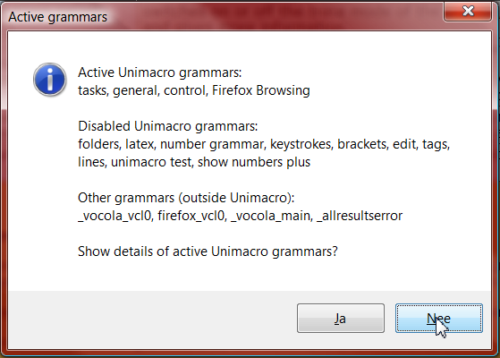

Controlling (the other) Unimacro grammars and actions
This is the controlling grammar, with which you can show or edit things. Say show control for the details of this grammar, say edit control for changing things, including translation or synonyms.
For other language versions these commands can differ. When translating Unimacro to a new language, start with this grammar.
The grammar:
command | comment |
|---|
show all grammars | open the display grammar window with all grammars |
show active grammars | give a list of active grammars. Also show non active (but loaded) grammars and grammars outside the Unimacro reach. See below for more details. |
show|edit {grammarname} | show the actual information (including the grammar) of grammarname, or edit the inifile for grammarname |
show|edit actions | give the actual actions of the window you are in, or edit the actions inifile. |
trace actions on|off|{count} | switches on or off the trace mode of the actions, a larger number slows down the process, and gives more information. |
edit grammar {grammarname} | Opens the python file in the appropriate window (eg Pythonwin).
The switch for automatic reloading is set when you edit some grammar file. So, when you save your changes, the grammar will be reloaded. |
switch on|off {grammarname} | switch on or off some grammar. The switching on or off is also set in the .ini configuration file of the respective grammar, so is persistent across NatSpeak sessions. |
switch on|off all grammars | all Unimacro grammars except the grammar control can be switched off in this way. Persistent across NatSpeak sessions. |
show active grammars
This command gives, in a yesno dialog box all the active and non-active grammars. For application specific grammars, you will notice they are disabled when the application is not in focus.
Also grammars that are outside Unimacro are shown, probably Vocola grammars.

You can switch on or off grammars by the command shown above.
The YesNo dialog box further asks you if you want to see the details of the active grammars. This is analogous to the window you get when you call show all grammars, but of course only showing active rules.
When you want more information about one specific grammar, it is more appropriate to call show grammarname.
Message
<message> is a mysterious-looking grammar rule. It was used for displaying messages from the Unimacro system into the NatSpeak recognition box. Leave it alone. It is obsolete now.
Actions
Actions are used in many grammars.
They can be shown or edited through the commands in the table above.
If you want to trace your actions you can call the command trace actions on or eg trace actions 3. In the messages box information is shown about the action and parts of the action that is/are performed. Also as the number increases, the actions are slowed down, so you can see what happens. For example trace actions 5 will go quite slow. Do not forget to call trace actions off when you are done. |